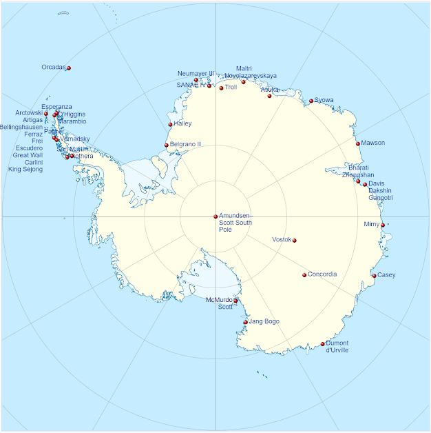
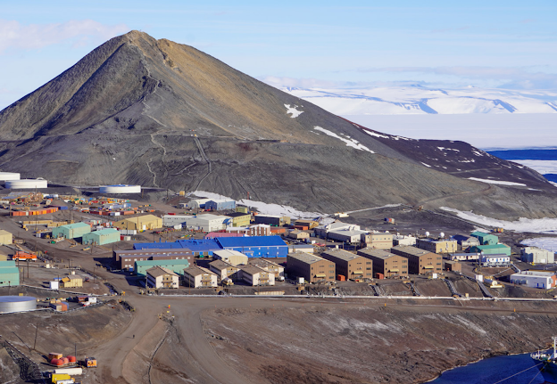
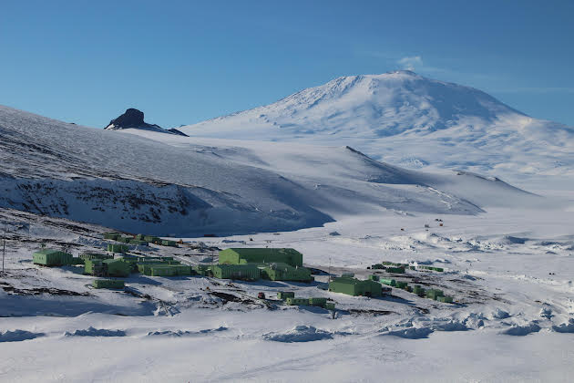
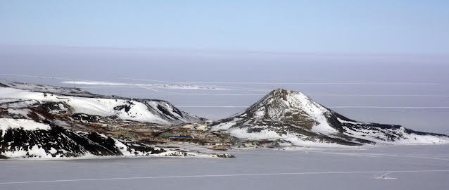
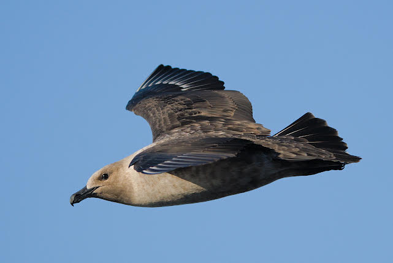
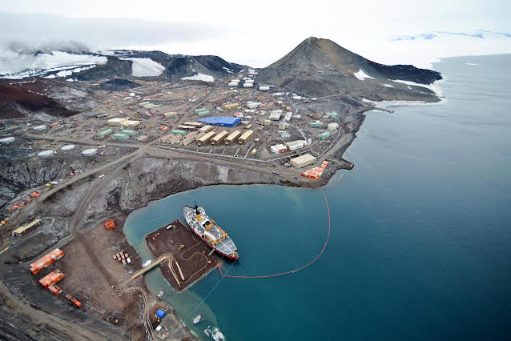
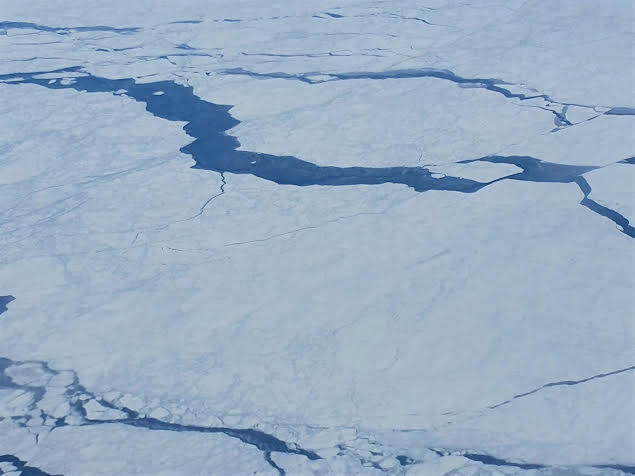
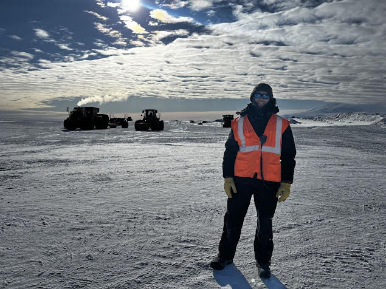

Longren Antarctic Newsletter #01 - 24.10.2022 ------------------------------ Dearest people,Welcome back to the newsletter, I hope you all are well. This marks the first letter I am sending from the ice. I arrived a week ago and have started settling in well here. As an outline of how these letters will be written, I'll be choosing a theme for each one and providing a description from my perspective. Towards the end of each letter, I'll give a short update on the latest in what I am personally doing. This week's theme will be: general location and structure of life in the Antarctic.  The year-round Antarctic stations. Going down heads to New Zealand, while the peninsula on the left leads to South America. (Wikipedia) A majority of information will be centered on my location; McMurdo Station, the most populated station in Antarctica, is run by the United States Antarctic Program (USAP), which is funded by the National Science Foundation (NSF). The entire purpose of the USAP is to support scientific research on the continent.  McMurdo Station and Observation Hill. (N. Klein) Location and environment Located at 77°S, McMurdo is roughly 2/3rds of the distance from New Zealand to the South Pole. This leads to quite extreme weather here (the current temperature is -22°C/-8°F with a wind chill of -35°C/-31°F). However, this barely compares to weather at the South Pole Station (their current temperature is -55°C/-67°F with a wind chill of -72°C/-97°F).  Scott Base and Mt. Erebus, the southernmost active volcano in the world. (P. Wannamaker) Conservation of the environment in polar regions is an important challenge. More than 50% of the waste from the station is recycled, with all food waste being shipped cooled back to the USA. Water is produced by converting sea water into drinking water and power is produced by diesel generators. A nearby station only a short hike away, the New Zealand (Kiwi) Scott Base, runs wind turbines for their power use, with excess being run to McMurdo. Spills of any non- consumable liquids are taken seriously to not impact wildlife, leading to pee bottles being important for any lengthy hikes. Conserving the ecosystem is also important, with any non-native species being banned from the continent (though humans, of course, are exempt). This means that since the 1980s sled dogs have not been allowed on the ice, for example.  McMurdo Station with the sea ice in the foreground. Williams Airfield can be seen in the distance. Behind the ridge and wind turbines on the left is Scott Base. (P. Rejcek) Wildlife Birding brunch is a club I've joined here that meets on Sundays in the galley (currently in a sarcastic manner, as the only living things currently above the ice are humans and seals). Today, I learned that there are three prominent types of birds in the area: the Adélie penguin, the Emperor penguin, and the skua. They will be arriving at the station as we get further into summer here. You all know of the penguin and how nice they are. The skua, on the other hand, is an infamous food scavenger. As summer approaches and the sea ice breaks, these birds will arrive and the skuas will dive on any food accessible to them (and long hair, I have heard). Large wildlife live here in the water, including seals and orcas. Additionally, small critters such as starfish and sea spiders thrive on the ocean floor.  A south polar skua in flight. (A. Bacchiochi) Lifelife While much of life here is similar to living in a small mining town, there are a few stark differences: it's always cold and it's truly remote. Some features of the town include a single restaurant (the galley, which is open around the clock), two bars, a coffee house, various gyms such as a weight room, basketball court, and climbing wall, along with a library. And that's it. Everything else has the purpose of either running the residential area or providing the needed scientific support. All cargo in and out of the station during the start and end of summer is moved via aircraft. Towards January, the aircraft are supplemented by ships as the sea ice melts.  An aerial photo of McMurdo taken in the middle of summer. A US Coast Guard icebreaker is shown in the center. (R. Piuk) Work in the town occurs during town hours: 0730 to 1730 Monday to Saturday. This is when the majority of people here are working. Some departments must run around the clock, so they will work five days per week and twelve hours per day (e.g., galley, cargo, firehouse, etc.). Currently, there are about 500 people on station. This number will reach close to 1,100 as more flights are able to arrive. We've had a few cases of COVID on station as more people are showing up this last week, so even down here we are not far enough removed from the virus. Internet is quite slow. Nothing too large in size can be accessed and even calling is difficult; the only way I was able to make a call off-continent was on a landline, which felt very old-school. My week Moving to myself specifically, I flew down to the ice last Saturday. It was on an Airbus A319, which provided a really wonderful view of the ocean on the way down. One thing that truly surprised me was how quickly it turned from water to sea ice as we left New Zealand. The ice is beautifully pristine and the transition from ocean to land is sudden and drastic.  Sea ice seen on the way to Antarctica. You hear about Antarctica being a desert, but man, it sure is true. It is dry here. I've been dealing with the worst chapped lips and dry nose since arriving. Also, yesterday it was "snowing", but it was actually just the wind blowing around the already existing snow from the ground. The station gets 213 mm of precipitation yearly, on average. Compare this to the global average of of 990 mm and you'll see that this is small. I feel like I've been both eating and drinking water twice as much to overcome the cold and the dryness of the continent. My first week of work involved a lot of training on equipment, such as loaders (big forklifts). We worked a few flights at the Phoenix Ice Runway, located about 19 miles/30 kilometers from the station on the Ross Ice Shelf. This shelf of ice is just a huge glacier the size of France that is sliding off of the continent. The shelf is several hundred meters thick, with 90% of it underneath the water. Some really big planes are able to land directly on the ice, where we upload and download the cargo on arriving and departing aircraft. There is some pretty cool equipment used to do the job. I'll describe with more detail what exactly I do in a future letter.  Yours truly at Phoenix airfield with a loader and a cargo transport vehicle in the background. Thanks for reading. With love, Luke ------------------------------ ------------------------------ If you think that someone would be interested in learning about the Antarctic and what working there is like, please do forward this letter to them. If you would like to be removed from this newsletter, just email me and I can do so. Lastly, if you have any questions about life, work, or anything else regarding Antarctica, send me an email and I can try to answer your question in the next letter. Thank you! |